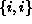
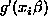

If the least squares problem were to find  to minimize
to minimize
where g is some non-linear function, then we obtain using the differentiation a new set of Normal Equations:
where W is a diagonal matrix of ``weights'', with  element defined as  . These are the normal equations for a ``weighted least squares problem''.
We will discuss the Newton-Raphson method (and variants) for solving a set of non-linear equations like those above.